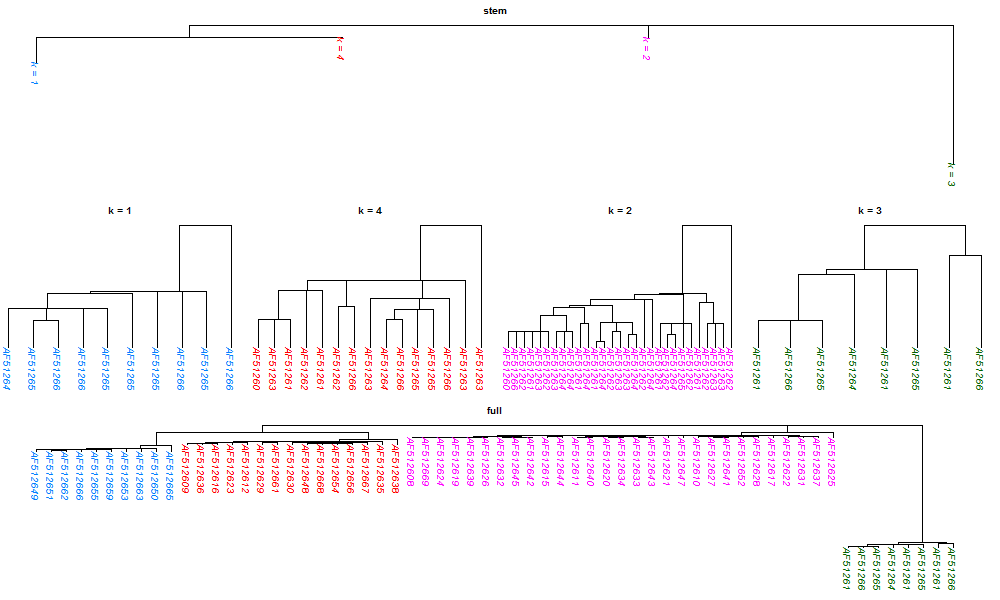

#### Assemble tree -- Assemble phylogenetic trees
A relative topic to this page is the Supertree, see wiki at
<a href="http://en.wikipedia.org/wiki/Supertree"
target="_blank">http://en.wikipedia.org/wiki/Supertree</a>
for more information.
Here, I only introduce a three-stages approach to construct a
phylogeny on the EIAV dataset. The detail steps are the following:
1. apply <code>phyclust</code> to get $K$ clusters,
2. apply <code>paml.baseml</code> on central sequences to obtain the stem tree,
3. apply <code>paml.baseml</code> on sequences of each clusters to obtain
$K$ leaves trees, then
4. adjoint the $K$ leaves trees to the stem tree.
The <code>R</code> script
(<a href="./ex_assembletree.r">ex_assembletree.r</a>)
uses the above steps to analysis
<a href="../example/pony625.txt">pony625.fas</a> and
to generate two figures below.
I arbitrary choose
$K = 4$
clusters.
The full tree is assemble from the stem tree with the four
leaves trees attached to each node of the stem tree, and
the colors indicate clusters.
<font color="red">Warning:</font> If the number of sequences of a leaves tree
is large, it may take extremely long time to find one tree by the function
<code>paml.baseml</code> given a model, not to mention to find
the best tree/model. Also, this function may dump large output files
even under the settings restricting minimum messages.
##### Opening questions:
1. Is a phylogenetic tree reasonable to the data for rapid evolving viruses
or close related subspecies?
2. How small are the clusters appropriate for constructing leaves trees?
3. What does this assemble tree approach mean/want to say? Reasonable?
4. How do we adjoin the unrooted leaves trees to the stem tree?
5. Do we have to scale leaves trees before adjoint to the stem tree?
6. Are there other ways to construct/search a tree?
7. How about to use the assembled star trees as the initial trees and search
an optimized/restricted tree based on this initial?
8. How close is this optimized/restricted tree comparing to the
best/true tree or the neighbor-joining tree?
9. Would PHYLIP provide better tree results?
The results of the three-stages approach are displayed in the following figure
(click to enlarge.)
The top is the stem tree, the middle is the scaled leaves trees, and
the bottom is the assemble tree.
<center>
<a href="./ex_assembletree.png"
target="_blank"></img></a>
</center>
---
<div w3-include-html="../preamble_tail_date.html"></div>